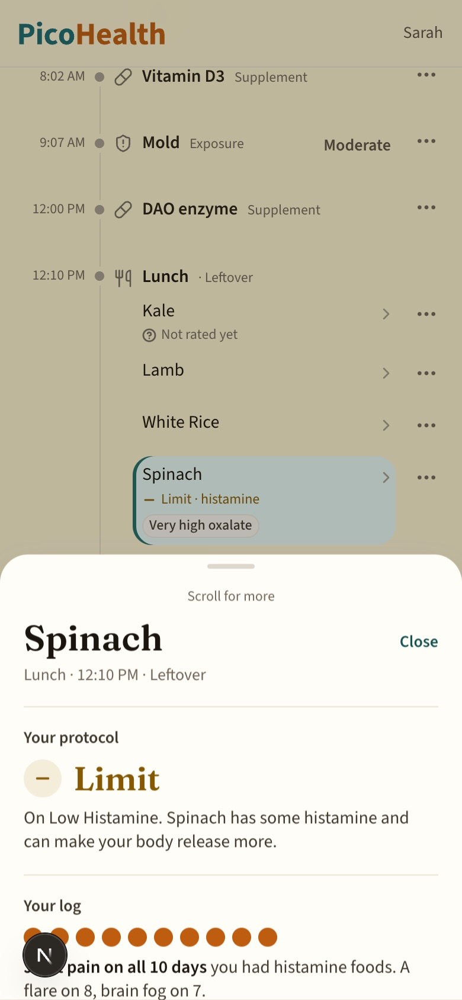
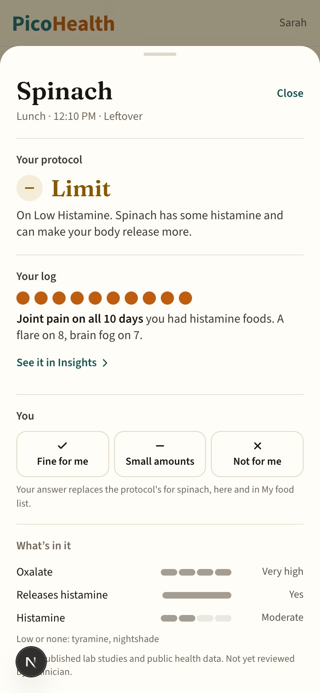
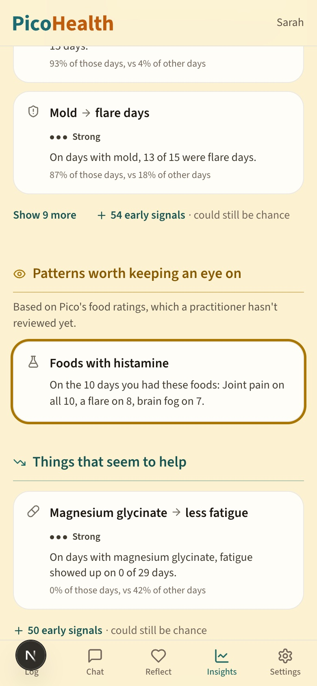
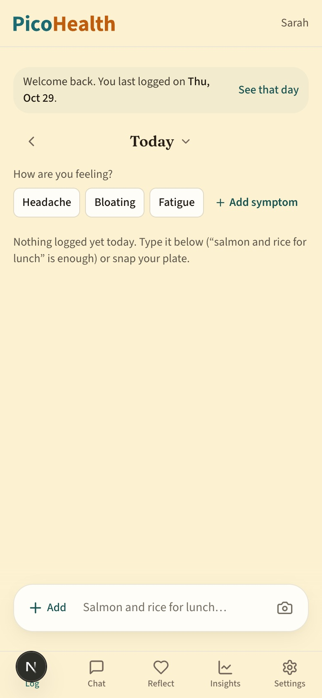
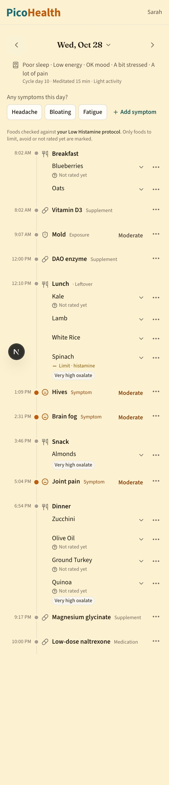
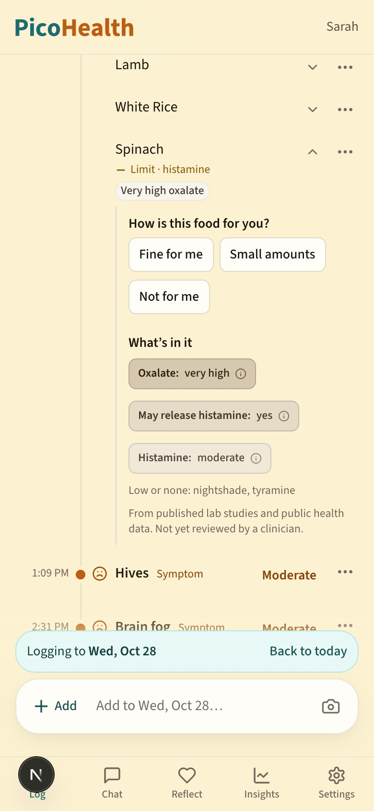
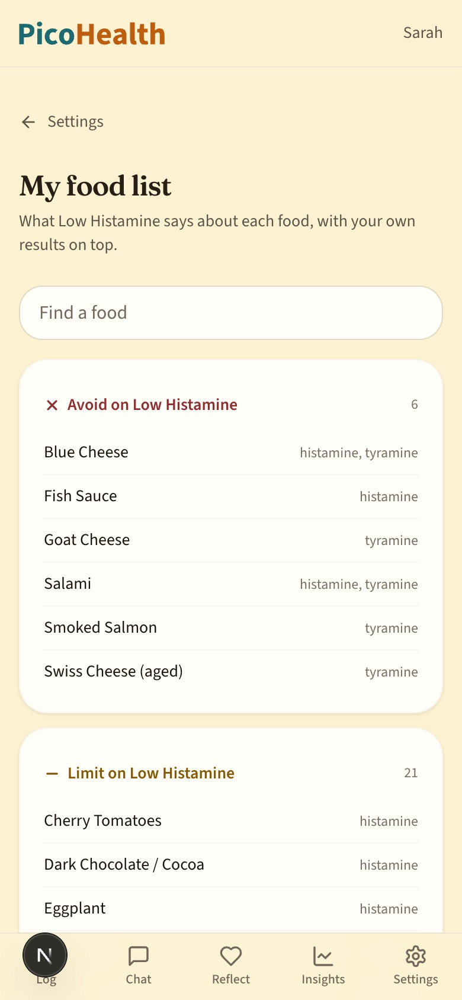
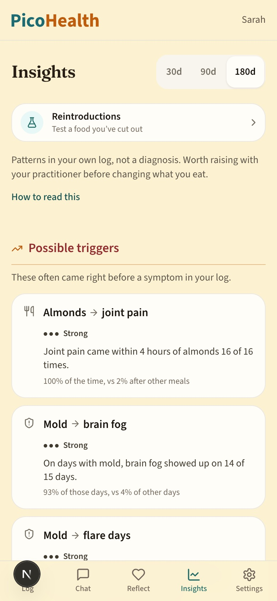
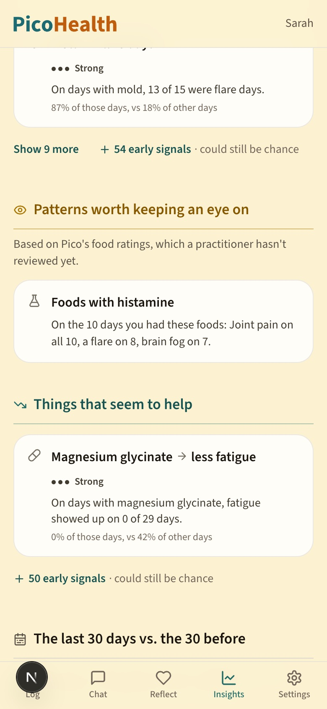
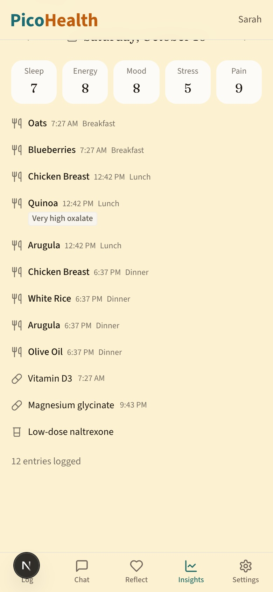

Log and Insights, screen by screen
One example of every screen changed so far, captured at phone width (390px) on Sarah's demo log. These are real screenshots of the built app, not mockups.
Live and signed off: colour rules, Log · today, Log · a past day, how foods are described. For tomorrow: review the opened food, food search, My food list and Insights below (rules already carried over, not shipped), and decide on the pattern link.
Everything we've decided
As of Nov 18, 2026.
Colour (signed off, live)
- Teal ✓ good for you: Allowed, fine for you, seems to help. Also the brand and anything you tap.
- Ochre − in between: Limit, worth keeping an eye on.
- Brick ✕ watch out: Avoid, possible triggers, errors.
- Clay symptoms only (and the logo's orange).
- Never colour strength (●●● in ink) or how much of a property a food has (tan getting darker).
- No colour per kind of entry. Food, supplements and exposures use grey icons.
- Olive, gold and the old red / green / yellow / blue are gone. The website keeps its own gold for the deep-teal panels.
Log · today (signed off, live)
- New wordmark in the header.
- The day starts high on the screen. "Welcome back" only on Today, after 3+ days away; it disappears once you log.
- "Day 12 of 30" only while a tracking goal is counting. Setting a goal and Export live in Settings.
- Squarer, smaller symptom buttons with full-size tap targets, "+ Add symptom", on past days too.
- One-line empty state.
Log · a past day (signed off, live)
- A timeline, morning to night, times on the left along one line. Meal first at the same minute; what you just logged lands next to the Add bar.
- Nothing boxed: a meal is a heading with its foods under it.
- Severity in words: Mild / Moderate / Severe.
- Reflect in words on two lines: "Poor sleep · Low energy…", then "Cycle day 10 · Light activity".
- Passes the accessibility check (axe, WCAG 2.2 AA): 0 issues.
How foods are described (signed off, live)
- Your protocol named once per day: "Foods checked against your Low Histamine protocol".
- A verdict plus at most two plain words: "− Limit · histamine", "✕ Avoid · tyramine". Levels and "may release" collapse into one word.
- On the Log, only what needs attention gets a mark: Limit, Avoid, "? Not rated yet", and your own ratings. A blank food is allowed.
- Food search and My food list still say "Allowed", because there every answer matters.
- Tags like "Very high oxalate" are plain grey facts, never red.
Insights (live; final review pending)
- "Possible triggers" + "These often came right before a symptom in your log."
- One card per finding. Count first ("on 14 of 15 days"), % beside it. ●●● strength in ink.
- "+N early signals" at the end of each section, after every stronger card. 3 per section, then "Show more".
- Reintroductions link at the top. "Your day" opens on your last logged day and hides low tags.
- Same plain wording as the Log: "Foods with histamine", not "moderate histamine or that can release histamine".
A food, opened (built, awaiting sign-off)
- Purpose: answer "is this food a problem for me?" in three voices: Your protocol, Your log, You. Then "What's in it" as small tan meters.
- Tapping a food slides up a panel that stops just under the food you tapped (it stays highlighted). Scroll or drag up for the rest; tap the day above it or Close to dismiss.
- Big display name and verdict; your log's evidence as dots; three equal choice buttons with one line saying your answer replaces the protocol's.
- "Your log" only appears when Insights really found something. This replaces the separate pattern-link idea.
How we work
- Changes go on this page first. Nothing ships until you sign off here.
- The app can't be monotone. Plain and quiet where you scan and log; richer design (big type, visuals like dots and meters, a sheet) where there's a moment that deserves it: a decision, a result, a pattern.
- What we decide on one screen carries to the screens we haven't reviewed yet, so we don't decide it twice.
- Screenshots are real, from Sarah's demo log at phone width.
Waiting for you tomorrow
- Review the screens below, where the decided rules are already carried over (built on my machine, not shipped): an opened food ("What's in it", squarer rating buttons), food search, My food list, and Insights (plain names, "Your day" in words).
- A food, opened: built (not shipped). Look at the three real screenshots at the top and sign off, then it ships.
- Then: food search, My food list, Insights, one at a time.
- Later ideas, noted: compare photo-of-your-plate logging with the app you heard about; Amy's features (symptom / exposure / treatment buttons, your own buttons, several protocols).
Proposal: what matters to you, on a food Mockup, not built
Three levels, each with its own look, ranked by how much it's about you. Spinach and sweet potato from Sarah's real data.
Today (two looks, no ranking by you)
- SpinachLimit · histamineVery high oxalate
Proposed: your log has a link
Proposed: no link in your log
- Sweet PotatoVery high oxalate
- 1 · Your protocol says (ochre or brick, − or ✕): unchanged.
- 2 · Your log shows (clay, the symptom colour, with a dot): only when Insights found this food goes with one of your symptoms, with real evidence, never an early signal. A count, not a warning. Tap it to open that finding in Insights.
- 3 · Also in this food (grey box): notable, not urgent. Unchanged.
One honest limit: the app knows Sarah's joint pain goes with spinach (9 of 11 days) and with almonds, both very high in oxalate, but Insights doesn't yet name oxalate itself as the link. So the clay line speaks about the food, not about oxalate. Making Insights say "foods very high in oxalate" is a separate engine check.
A food, opened: built Built, not shipped: awaiting your sign-off
The real app on Sarah's Oct 28, at phone width. Tap Spinach on the Log: the panel stops just under it (Spinach stays highlighted), scroll for the rest, and "See it in Insights" opens Insights at the matching card, outlined for a moment.



Checked: the accessibility scan (axe, WCAG 2.2 AA) found 0 issues with the panel open; every tap target is 44px+; the day behind the panel can't be reached while it's open; Close, tapping the day and Escape all close it; reduced-motion settings are respected. "Your log" only appears when Insights found a pattern with real evidence (never an early signal). With no protocol, "Your protocol" isn't shown.
The mockup it was built from Mockup
Purpose: answer "is this food a problem for me?" in three voices: what your protocol says, what your log says, what you say. Try it: tap Spinach on the phone. The panel rises to just under the food you tapped, so Spinach (highlighted) stays in view. Scroll inside it or tap the handle to bring it all the way up. Tap the day above, or Close, to slide it down. Spinach, from Sarah's real Oct 28 lunch.
Wed, Oct 28
Scroll or drag up for more
Spinach
Lunch · 12:10 PM · Leftover
Your protocol
On Low Histamine. Spinach has some histamine and can make your body release more.
Your log
Joint pain on all 10 days you had histamine foods. A flare on 8, brain fog on 7.
See it in InsightsYou
Your answer replaces the protocol's for spinach, here and in My food list.
What's in it
Low or none: tyramine, nightshade
From published lab studies and public health data. Not yet reviewed by a clinician.
The Add bar and "Logging to Wed, Oct 28 · Back to today" stay at the bottom of a past day (live now); the full-day screenshots below hide them so the whole day fits.
What makes it work
- One question, three voices. Protocol, then your own data, then your call, top to bottom. Each has a plain heading, so you always know whose opinion you're reading.
- The big word is the verdict. "− Limit" in ochre at display size, the reason in one sentence underneath.
- Evidence you can see. Ten clay dots, all filled: joint pain on all 10 days. Only shows when your Insights really found something; otherwise this part isn't there.
- A real choice. Three equal options with ✓ − ✕, and one line saying what your answer does.
- Chemistry last, as meters. Very high fills four bars, moderate two, in the tan level colour, so they read at a glance and never look like a verdict.
- Editing stays where it is. Change food, meal or time and Delete stay in the ••• menu.
When there's no protocol, "Your protocol" isn't shown. With nothing in your log, "Your log" isn't shown. A food can open with just "You" and "What's in it".
Proposal: link a food to your own pattern Mockup, not built
When Insights has found that a property in a food goes with one of your symptoms (enough evidence, not an early signal), the Log says so in ochre with the eye symbol, and tapping it opens that card in Insights. Never red, never "avoid": it's what your own log noticed. No link in your data, nothing changes.
On the Log (Sarah's real data)
- White Rice
Where the tap lands, in Insights
On the 10 days you had these foods: Joint pain on all 10, a flare on 8, brain fog on 7.
Arrives here, scrolled to this card, with a brief ochre outline that fades after two seconds. If the card was folded under "Show more", the section opens.
One shape only: a line under the food, "Your log links histamine to joint pain ›", for the property your own Insights flagged. Tags like "Very high oxalate" stay grey. Tapping the line opens that card in Insights.
Log Live · signed off
Includes the colour change that also touches food search and My food list.





Insights Rules carried over: review tomorrow
"Possible triggers" and the colourless ●●● meter, as you chose, plus the review fixes.


